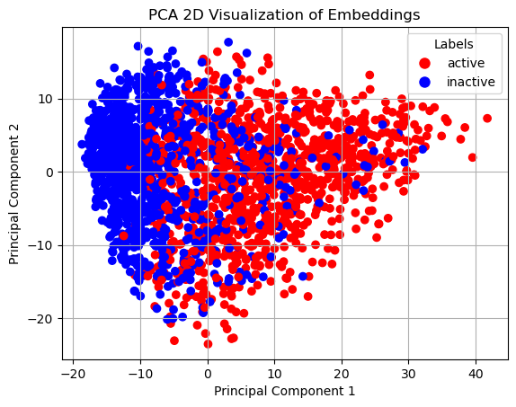
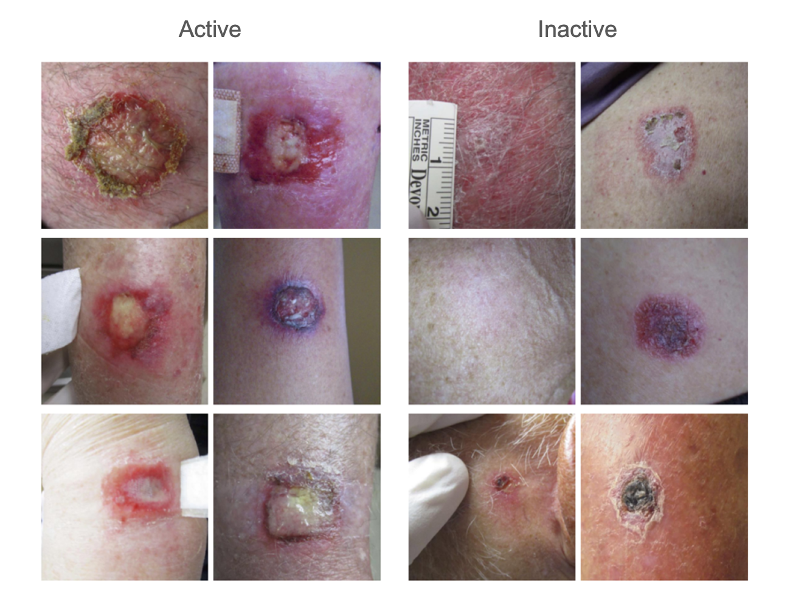

Collected over nearly two decades (2008-present) at Shen Dermatology, SC-8000 represents one of the largest single-therapy, longitudinal dermatology image datasets to date. The dataset enables analysis of time-dependent visual biomarkers--inflammation, tissue breakdown, and reconstruction--and is purpose-built for computer vision research. SC-8000 serves as the foundational dataset for DermLens.